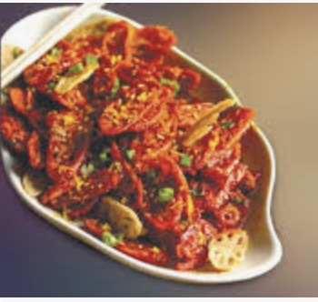

ABOUT THE CAFE
The Cafe was founded in 1952
Welcome to Epic The Restaurant, a neighborhood spot for honest food and a little flair. Our menu travels from warm, shareable starters—like the Bread Basket, Honey Almond Granola with Fruits, Belgian Waffle, Scrambled Eggs, and Blueberry Pancakes—to hearty mains that celebrate both veg and non-veg favorites. Try the vibrant Lotus Stem or The Farm Burger, or go bold with Pigalicious Pig, Golden Cow, and A Suitor’s Dish. Thirsty? Our bar keeps things bright and breezy with Pinna colada, Fruit Triangle, and Paradise Punch. For dessert, choose between timeless comfort and festive indulgence: Red Velvet Bundt Cake, Mint Chocolate Mousse Wreath, Mouse Crunch, or silky Panna cotta. At Epic, we keep the mood warm, the portions generous, and the flavors memorable..
Opening hours: everyday from 10am to 10pm.
Address: 1522, Street 9, Bangalore